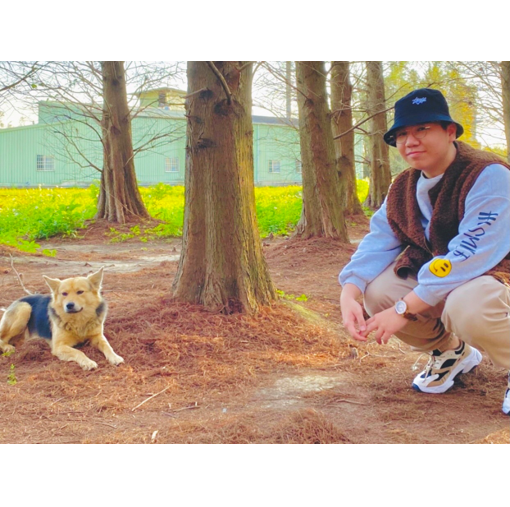

團體組員

資管四甲 10744121 曾雅珊 前端設計 |
經過一年的專題，我覺得自己成長了許多，也深知自己還有許多不足，最一開始我們大家都把許多事情想得太簡單了，讓專題老師無言，但我們也因此學到了很多原本沒學到的東西，因為我們想做關於商業模式相關的專題，因此去查詢相關的理論，才發現原本學到的只有其中一小部分而已，原來還有更多的理論我們不知道，但是學會了實際去做，才發現我們把許多事情想得太簡單了，才經由老師手把手的指導後，我們才做出這份專題。 |
|
從一開始的專題題目構想、訪談相關單位、系統分析與設計，到最後平台成型，非常感謝老師一路的教導，讓我們學習到許多商業的理論及知識，並且實際的應用在我們發想的內容上，我覺得十分有難度，因為我們可能應用上有一些問題，但是已經盡我們所能去結合我們想法，創造出我們的心領神會平台!最後非常謝謝老師的協助，以及我們專題小夥伴們一直以來的努力和熱情，讓我們能夠完成了我們專題，有一個不錯的結果，謝謝大家。 |
資管四甲 10744130 蔡宜玲 後端設計 |

資管四甲 10744146 范欣媛 前端設計 |
經過這一年的專題訓練，從毫無靈感的題目發想到內容的構思以及實際的製作，要感謝老師的耐心指導與組員們認真、包容的溝通，才有這樣的成果。透過這次的經驗，相信大家不只學習並應用到系上所學還上網查詢了許多相關資料，讓我們對別的領域有更進一步的了解。在整個過程中，更是體會到要如何與團隊共事，除了學會聆聽也學會該怎麼表達自己的想法，這將會成為我們重要的一次經驗，對未來也會有所幫助。 |
|
經過這一年的專題，讓我學習到了許許多多的東西，我們的專題從一開始單單只為了中途之家做系統，到了後來透過老師的教導，一步步的引導我們將整個商業型態和模型完整構思出來。這期間也因為整個構想與預先思考的不同，導致我們中間有段時間搞不清楚我們專題真正的目標是什麼?很感謝老師的教導，讓我們了解到一個成功的商業平台系統背後要考慮到許多不同的要素，也讓我們了解到我們不能單單只站在我們角度去看這個系統，也應該去顧慮到中途之家的體驗及如何促進他們與收容所之間的連結，也感謝專題夥伴們這一年來的努力，希望這次的專題經驗對於我們未來都有所幫助。 |

資管四甲 10744150 王昭舜 後端設計 |